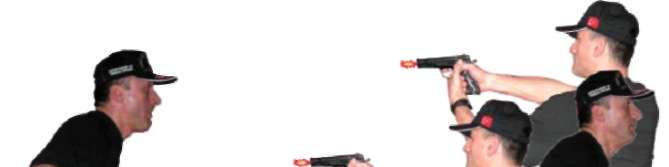

Dikkat edilmesi gereken husus, koşarken silahınızın hareket alanı, tabancanın namlusu hedefin yönünde, kolun doğal ileri geri hareketiyle birlikte olmalıdır.
1.6.4. Koşarken Geriden Çıkan Hedeflere Doğru Durarak Atış Tekniği Koşarken geriden çıkan hedeflere karşı önce duruşunuzu step yaparak tamamlayın. Eş zamanlı olarak geriye dönüş tekniğini uygulayıp hızlı atış pozisyonuna geçerek, tabanca elinizde ise direkt hedefe doğrultup atış yapın.
Tabanca kılıfında ve fişek yatağı boş ise çekip kurarak, fişek yatağı dolu ise direk hedefe yönelterek atış yapın. (Bakınız Resim-8.d) 72

BÖLÜM
İLERİ SEVİYE ATIŞ TEKNİKLERİ
Soldan
Geri
Dönüş
Resim-8.d) Koşarken Geriden Çıkan Hedeflere Doğru Durarak Atış Tekniği (Yarı Otomatik Tabanca)
Tekniği Uygulamalı Olarak Çalışma Şekli
^ Emniyet tedbirlerini okuyun. Atış poligonuyla ilgili gerekli önlemleri alın.
^ Vücudunuzu basit ısınma teknikleri ile ısındırılarak çalışmaya hazırlayın.
Tabanca ve şarjörleri kontrol edip koruyucu malzemeleri giyin ve giydirin.
^ Tekniklerin hepsini, atışlı çalışmadan önce yeterince kuru çalışın.
^ Bu istasyon çalışması aynı anda en fazla 2 veya 3 kişiyle yapılır. Kişi sayısına göre boy hedefi takılarak yaklaşık 30 metre mesafeden uzaktan yakın mesafeye doğru hedeflere koşarak uygulanır.
^ Şarjörünüzü tam kapasite doldurun. Elinizdeki tabancaya şarjörü takarak normal dolduruş yapın ve “Koş!” komutunu bekleyin. “Koş!” komutuyla hedefe doğru koşarken 20-15-10-5 metre mesafelerde verilecek atış komutlarıyla step yaparak durup atış yapın sonra tekrar koşmaya devam edin.
^ Aynı teknikle tek kişi olarak hedefe sırtınızı dönün. Hedefe 2 metre mesafeden koşarak uzaklaşın. Yaklaşık 5-10-15-20 metre mesafelerden verilecek atış komutlarıyla step yapıp durun ve geri dönüş tekniğini uygulayıp hedefe atış yapın. Sonra geriye dönüp koşmaya devam edin.